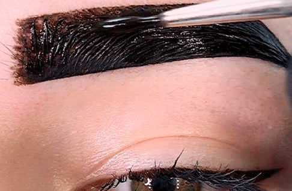
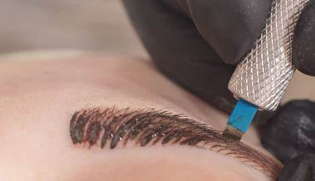

Nossos Trabalhos em Destaque



O Que Nossos Clientes Dizem
Nunca imaginei que minhas sobrancelhas pudessem ficar tão perfeitas! A profissional da A&C Studio tem um talento incrível para realçar minha beleza natural.

A maquiagem que fizeram para meu casamento foi simplesmente perfeita. Me senti linda e confiante o dia todo. Recomendo demais o A&C Studio!

Depois do tratamento facial no AC Studio, minha pele nunca esteve tão bonita e saudável. Profissionais incríveis e ambiente acolhedor!